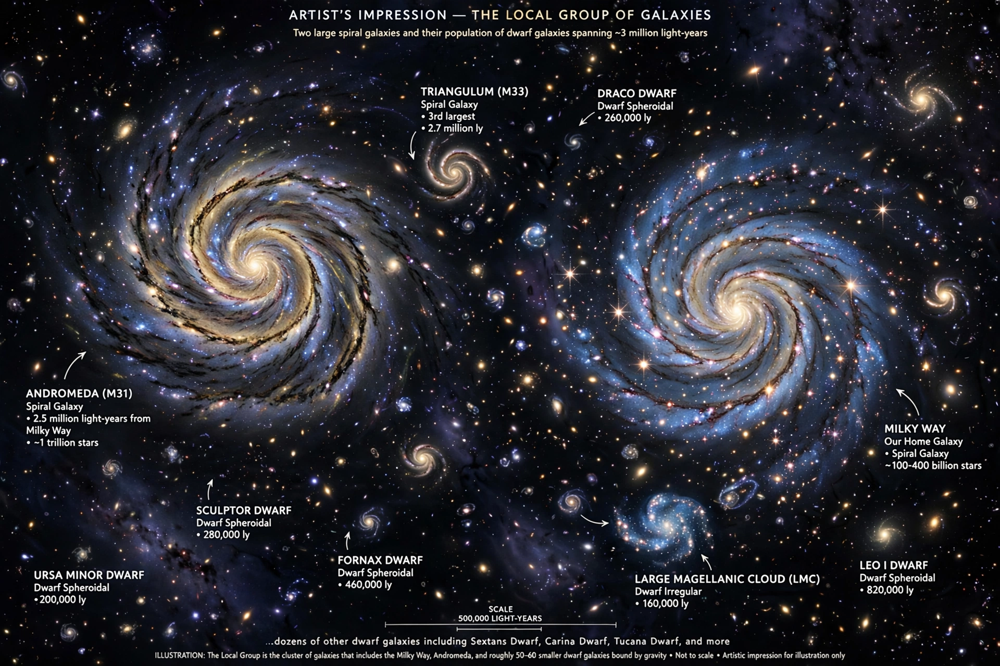

This is a list of known galaxies closest to the Milky Way, ordered by distance. Most of the nearest galaxies are members of the Local Group, the galaxy group that includes the Milky Way, the Andromeda Galaxy and the Triangulum Galaxy, along with roughly 80 smaller, mostly dwarf, galaxies. Distances are given in light-years.
| # | Galaxy | Distance (light-years) | Type | Notes |
|---|---|---|---|---|
| 1 | Canis Major Dwarf | ~25,000 | Irregular/dwarf | Status debated; possibly a disrupted structure in the Milky Way disc |
| 2 | Sagittarius Dwarf Spheroidal | ~65,000 | dSph | Being tidally disrupted by the Milky Way |
| 3 | Large Magellanic Cloud | ~163,000 | SB(s)m | Largest satellite of the Milky Way; visible from the southern hemisphere |
| 4 | Boötes II Dwarf | ~197,000 | dSph | Ultra-faint dwarf |
| 5 | Small Magellanic Cloud | ~206,000 | SM | Companion to the LMC |
| 6 | Ursa Minor Dwarf | ~215,000 | dE | Discovered 1954 |
| 7 | Draco Dwarf | ~260,000 | dE | Among the most dark-matter-dominated galaxies known |
| 8 | Sculptor Dwarf | ~287,000 | dE | Discovered 1937 |
| 9 | Sextans Dwarf Spheroidal | ~294,000 | dSph | Discovered 1990 |
| 10 | Ursa Major I Dwarf | ~319,000 | dSph | Ultra-faint |
| 11 | Carina Dwarf Spheroidal | ~330,000 | dSph | Episodic star formation |
| 12 | Fornax Dwarf | ~457,000 | dE | Contains six globular clusters |
| 13 | Leo II | ~690,000 | dE | |
| 14 | Leo I | ~820,000 | dE | Among the most distant Milky Way satellites |
| — | Andromeda Galaxy (M31) | ~2,540,000 | SA(s)b | Largest Local Group member; approaching the Milky Way |
| — | Triangulum Galaxy (M33) | ~2,730,000 | SA(s)cd | Third-largest Local Group member |